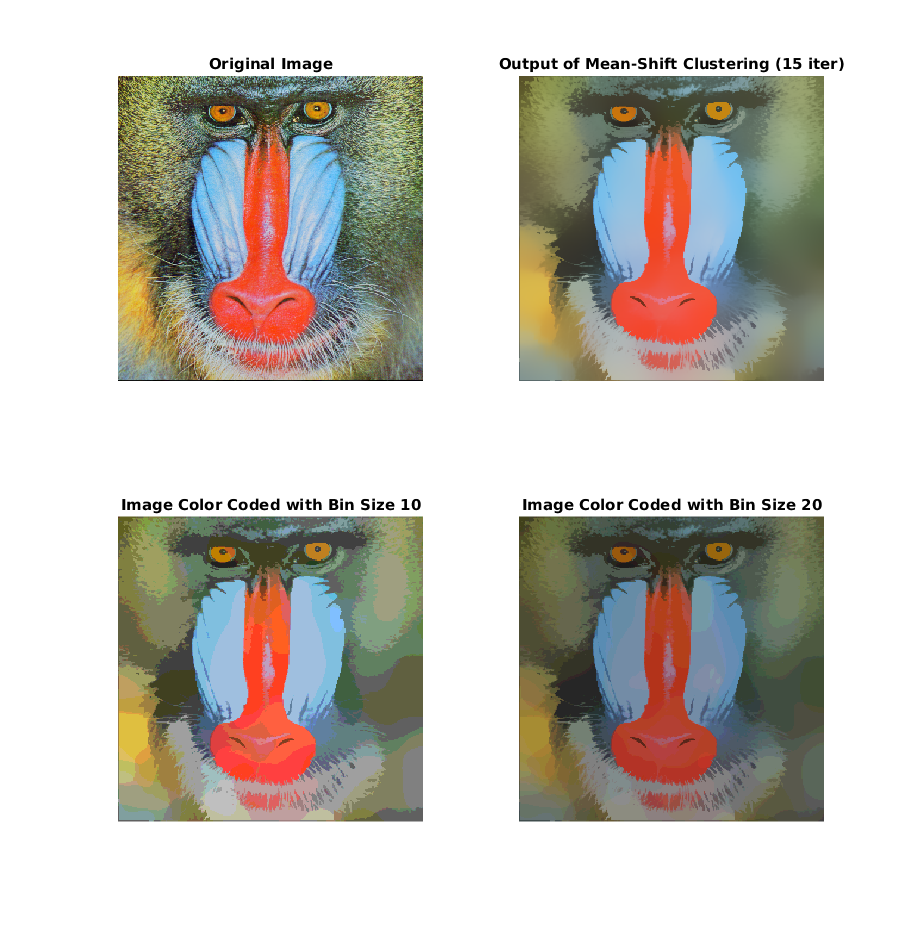
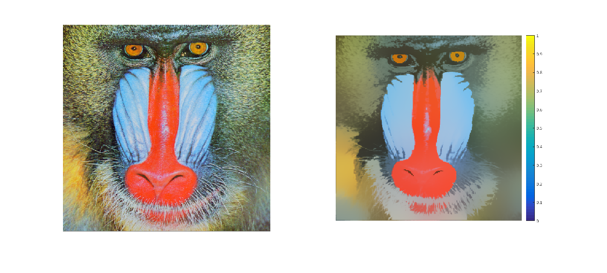
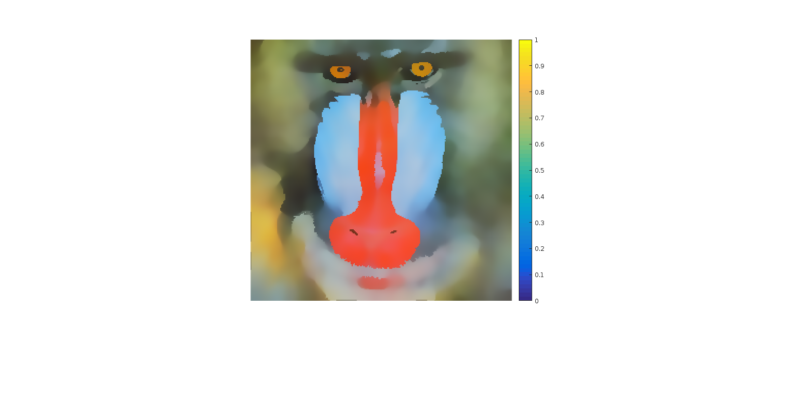

Q2. MeanShift Segmentation
Dhanvi Sreenivasan, Dhruv Ilesh Shah and Bhavesh Thakkar
Contents
myMeanShiftSegmentation.m
function [out, outc10, outc20] = myMeanShiftSegmentation(input_image, hs, hc, iter) % Gaussian smoothing, with window-size 5 (Covers +/- 3sigma), sigma = 1 pixel width smooth_filter = fspecial('gaussian', [7 7], 1); I = im2double(input_image); smoothed = imfilter(I, smooth_filter, 'conv'); I = smoothed(1:2:end,1:2:end,:); s = size(I); rows = s(1); cols = s(2); space_gaussian = fspecial('gaussian', [6*hs+1 6*hs+1], hs); out = I; %s_g3d = cat(3,space_gaussian,space_gaussian,space_gaussian); I = padarray(I, [3*hs 3*hs]); %row_dim = ones(4*hs+1,1); %col_dim = ones(4*hs+1,1); for k=1:iter for i = 3*hs+1:rows + 3*hs for j = 3*hs+1:cols + 3*hs A = I(i-3*hs:i+3*hs,j-3*hs:j+3*hs,1:3); %B = mat2cell(A, row_dim, col_dim, 3); int_i = out(i-3*hs,j-3*hs,:); B = (bsxfun(@minus,A,int_i)).^2; G = exp(-1.*sum(B,3)./(hc*hc)); G = G.*space_gaussian; G3d = cat(3,G,G,G); Z = A.*G3d; Gx = G(max(1,6*hs+2-i):min(end,rows+6*hs+1-i),max(1,6*hs+2-j):min(end,cols+6*hs+1-j)); update = sum(reshape(Z,[],size(Z,3)))/sum(Gx(:)); out(i-3*hs,j-3*hs,:) = update; end end end outc10 = round(out * 8) / 8; outc20 = round(out * 15) / 20; end
Results
img = imread('../data/baboonColor.png'); tic; [out, outc10, outc20] = myMeanShiftSegmentation(img, 10, 0.08, 17); toc figure('name', 'Mean-Shift Segmentation', 'Position', [100 100 900 900]) subplot(2,2,1), imshow(img); title('Original Image'); subplot(2,2,2), imshow(out); title('Output of Mean-Shift Clustering (15 iter)'); subplot(2, 2, 3), imshow(outc10); title('Image Color Coded with Bin Size 10'); subplot(2, 2, 4), imshow(outc20); title('Image Color Coded with Bin Size 20'); daspect([1 1 1])
Elapsed time is 283.916617 seconds.
Analysis
The output of the mean-shift need not have converged completely at the end of a fixed number of iterations, and including an epsilon bound check may take an unbounded amount of time to converge. Hence the output shown may still have some finite gradients. To get rid of that, we use naive binning approach to obtain a simple color coded scheme (was not required, but to emphasise the compression that can be achieved).
% The total number of unique colors can be obtained as follows. unique_colors = unique(outc10(:,:,1) + 2*(outc10(:,:,2)) + 4*(outc10(:,:,3))); c = numel(unique_colors) % Thus the color space of the image can now be represented using log(c) % bits, instead of 8*3 bits.
c =
40
Parameters
The above output was obtained at the parameters given below.
{'h_s', 'h_c', 'iter'; 10, 0.08, 17}
ans =
'h_s' 'h_c' 'iter'
[ 10] [0.0800] [ 17]
Other Results
The obtained result does look well segmented, without much loss of detailing of features. Since there can not be a clear demarcation of what the "correct" parameters are, here are some other outputs that we got for the problem.
img = imread('../images/BaboonSmall_15_0.1.png'); figure, imshow(img); title('h_s = 15; h_c = 0.1; 30 iterations') img = imread('../images/baboonSmall_50_5_0.2.png'); figure, imshow(img); title('h_s = 5; h_c = 0.2; 50 iterations') % This output is highly smudged on the outside, but the inner features are % well demarcated.
Warning: Image is too big to fit on screen; displaying at 67% 